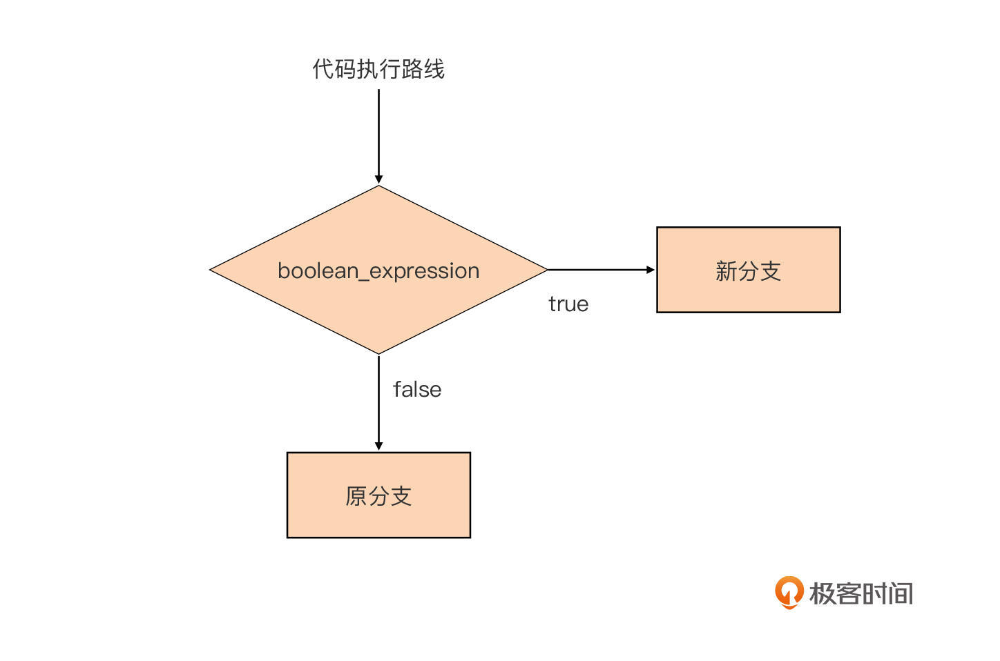
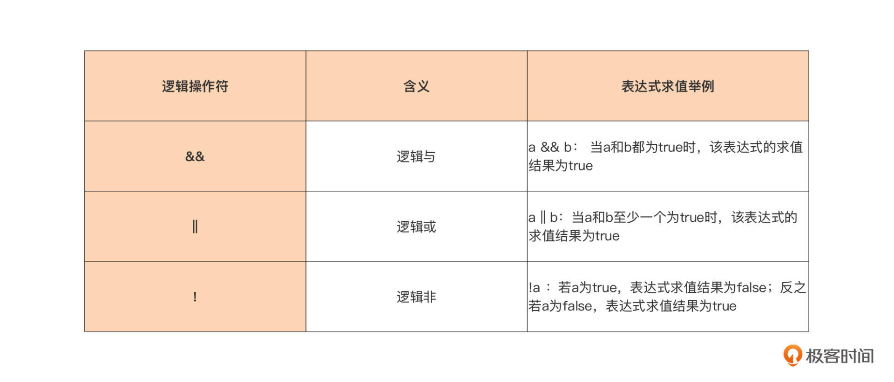
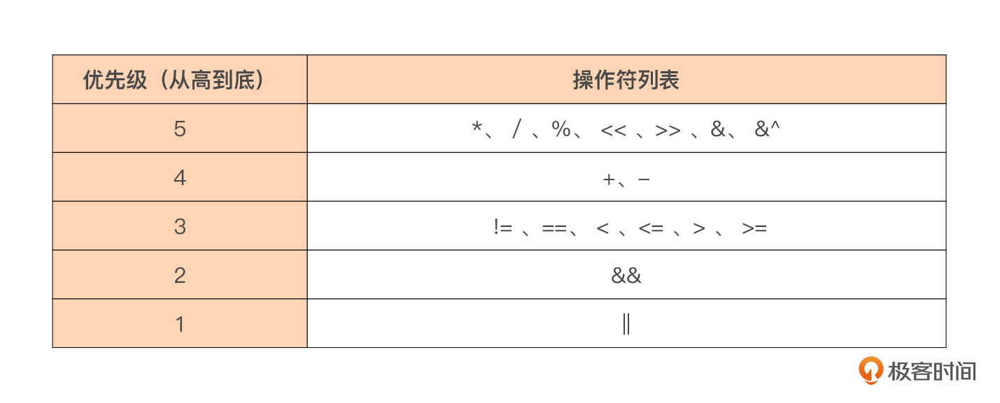

- 00 开篇词 这样入门Go，才能少走弯路.md.html
- 01 前世今生：你不得不了解的Go的历史和现状.md.html
- 02 拒绝“Hello and Bye”：Go语言的设计哲学是怎么一回事？.md.html
- 03 配好环境：选择一种最适合你的Go安装方法.md.html
- 04 初窥门径：一个Go程序的结构是怎样的？.md.html
- 05 标准先行：Go项目的布局标准是什么？.md.html
- 06 构建模式：Go是怎么解决包依赖管理问题的？.md.html
- 07 构建模式：Go Module的6类常规操作.md.html
- 08 入口函数与包初始化：搞清Go程序的执行次序.md.html
- 09 即学即练：构建一个Web服务就是这么简单.md.html
- 10 变量声明：静态语言有别于动态语言的重要特征.md.html
- 11 代码块与作用域：如何保证变量不会被遮蔽？.md.html
- 12 基本数据类型：Go原生支持的数值类型有哪些？.md.html
- 13 基本数据类型：为什么Go要原生支持字符串类型？.md.html
- 14 常量：Go在“常量”设计上的创新有哪些？.md.html
- 15 同构复合类型：从定长数组到变长切片.md.html
- 16 复合数据类型：原生map类型的实现机制是怎样的？.md.html
- 17 复合数据类型：用结构体建立对真实世界的抽象.md.html
- 18 控制结构：if的“快乐路径”原则.md.html
- 19 控制结构：Go的for循环，仅此一种.md.html
- 20 控制结构：Go中的switch语句有哪些变化？.md.html
- 21 函数：请叫我“一等公民”.md.html
- 22 函数：怎么结合多返回值进行错误处理？.md.html
- 23 函数：怎么让函数更简洁健壮？.md.html
- 24 方法：理解“方法”的本质.md.html
- 25 方法：方法集合与如何选择receiver类型？.md.html
- 26 方法：如何用类型嵌入模拟实现“继承”？.md.html
- 27 即学即练：跟踪函数调用链，理解代码更直观.md.html
- 28 接口：接口即契约.md.html
- 29 接口：为什么nil接口不等于nil？.md.html
- 30 接口：Go中最强大的魔法.md.html
- 31 并发：Go的并发方案实现方案是怎样的？.md.html
- 32 并发：聊聊Goroutine调度器的原理.md.html
- 33 并发：小channel中蕴含大智慧.md.html
- 34 并发：如何使用共享变量？.md.html
- 35 即学即练：如何实现一个轻量级线程池？.md.html
- 36 打稳根基：怎么实现一个TCP服务器？（上）.md.html
- 37 代码操练：怎么实现一个TCP服务器？（中）.md.html
- 38 成果优化：怎么实现一个TCP服务器？（下）.md.html
- 39 驯服泛型：了解类型参数.md.html
- 40 驯服泛型：定义泛型约束.md.html
- 41 驯服泛型：明确使用时机.md.html
- 元旦快乐 这是一份暂时停更的声明.md.html
- 加餐 作为Go Module的作者，你应该知道的几件事.md.html
- 加餐 如何拉取私有的Go Module？.md.html
- 加餐 我“私藏”的那些优质且权威的Go语言学习资料.md.html
- 加餐 聊聊Go 1.17版本的那些新特性.md.html
- 加餐 聊聊Go语言的指针.md.html
- 加餐 聊聊最近大热的Go泛型.md.html
- 大咖助阵 叶剑峰：Go语言中常用的那些代码优化点.md.html
- 大咖助阵 大明：Go泛型，泛了，但没有完全泛.md.html
- 大咖助阵 孔令飞：从小白到“老鸟”，我的Go语言进阶之路.md.html
- 大咖助阵 徐祥曦：从销售到分布式存储工程师，我与 Go 的故事.md.html
- 大咖助阵 曹春晖：聊聊 Go 语言的 GC 实现.md.html
- 大咖助阵 海纳：聊聊语言中的类型系统与泛型.md.html
- 期中测试 一起检验下你的学习成果吧.md.html
- 用户故事 罗杰：我的Go语言学习之路.md.html
- 结束语 和你一起迎接Go的黄金十年.md.html
- 结课测试 快来检验下你的学习成果吧！.md.html
- 捐赠
18 控制结构：if的“快乐路径”原则
你好，我是Tony Bai。
1984年图灵奖获得者、著名计算机科学家尼古拉斯·沃斯（Niklaus Wirth）提出过著名的“程序=数据结构+算法”的公式。在前面的课程中，我们花了很多时间讲解了Go语言的基本数据类型和复合数据类型，这些对应的就是公式中数据结构，通过这些数据类型我们可以建立起复杂的数据结构。
那么公式中的算法呢？算法是对真实世界运作规律的抽象，是解决真实世界中问题的步骤。在计算机世界中，再复杂的算法都可以通过顺序、分支和循环这三种基本的控制结构构造出来。
顺序结构自然不用说了，我们要关注的主要是后面两个。所以，这一节课开始的连续三节课，我们都会聚焦于Go语言中的分支和循环这两种控制结构。
那么Go语言对分支与循环两种控制结构的支持是怎么样的呢？针对程序的分支结构，Go提供了if和switch-case两种语句形式；而针对循环结构，Go只保留了for这一种循环语句形式。这节课我们就先从Go语言分支结构之一的if语句开始讲起。
Go中的分支结构之认识if语句
在01讲中我们提到过，Go语言是站在C语言等的肩膀之上诞生与成长起来的。Go语言继承了C语言的很多语法，这里就包括控制结构。但Go也不是全盘照搬，而是在继承的基础上又加上了自己的一些优化与改进，比如：
- Go坚持“一件事情仅有一种做法的理念”，只保留了for这一种循环结构，去掉了C语言中的while和do-while循环结构；
- Go填平了C语言中switch分支结构中每个case语句都要以break收尾的“坑”；
- Go支持了type switch特性，让“类型”信息也可以作为分支选择的条件；
- Go的switch控制结构的case语句还支持表达式列表，让相同处理逻辑的多个分支可以合并为一个分支，等等。
如果你这个时候还不是很懂我提到的这些改进点，没有关系，在后面的几节课中，我会为你详细讲解Go关于控制结构的各个优化和改进点。
那么，Go中的if语句又有什么创新点呢？我们先来认识一下Go中的if语句。
if语句是Go语言中提供的一种分支控制结构，它也是Go中最常用、最简单的分支控制结构。它会根据布尔表达式的值，在两个分支中选择一个执行。我们先来看一个最简单的、单分支结构的if语句的形式：
if boolean_expression {
// 新分支
}
// 原分支
分支结构是传统结构化程序设计中的基础构件，这个if语句中的代码执行流程就等价于下面这幅流程图：

从图中我们可以看到，代码执行遇到if分支结构后，首先会对其中的布尔表达式（boolean_expression）进行求值，如果求值结果为true，那么程序将进入新分支执行，如果布尔表达式的求值结果为false，代码就会继续沿着原分支的路线继续执行。
虽然各种编程语言几乎都原生支持了if语句，但Go的if语句依然有着自己的特点：
第一，和Go函数一样，if语句的分支代码块的左大括号与if关键字在同一行上，这也是Go代码风格的统一要求，gofmt工具会帮助我们实现这一点；
第二，if语句的布尔表达式整体不需要用括号包裹，一定程度上减少了开发人员敲击键盘的次数。而且，if关键字后面的条件判断表达式的求值结果必须是布尔类型，即要么是true，要么是false：
if runtime.GOOS == "linux" {
println("we are on linux os")
}
如果判断的条件比较多，我们可以用多个逻辑操作符连接起多个条件判断表达式，比如这段代码就是用了多个逻辑操作符&&来连接多个布尔表达式：
if (runtime.GOOS == "linux") && (runtime.GOARCH == "amd64") &&
(runtime.Compiler != "gccgo") {
println("we are using standard go compiler on linux os for amd64")
}
除了逻辑操作符&&之外，Go还提供了另外两个逻辑操作符，我总结到了这张表里。

你可能也注意到了，上面示例代码中的每个布尔表达式都被小括号括上了，这又是什么原因呢？这是为了降低你在阅读和理解这段代码时，面对操作符优先级的心智负担，这也是我个人的编码习惯。
Go语言的操作符是有优先级的。这里你要记住，一元操作符，比如上面的逻辑非操作符，具有最高优先级，其他操作符的优先级如下：

操作符优先级决定了操作数优先参与哪个操作符的求值运算，我们以下面代码中if语句的布尔表达式为例：
func main() {
a, b := false,true
if a && b != true {
println("(a && b) != true")
return
}
println("a && (b != true) == false")
}
执行这段代码会输出什么呢？你第一次读这段代码的时候，可能会认为输出(a && b) != true，但实际上我们得到的却是a && (b != true) == false。这是为什么呢？
这段代码的关键就在于，if后面的布尔表达式中的操作数b是先参与&&的求值运算，还是先参与!=的求值运算。根据前面的操作符优先级表，我们知道，!=的优先级要高于&&，因此操作数b先参与的是!=的求值运算，这样if后的布尔表达式就等价于a && (b != true) ，而不是我们最初认为的(a && b) != true。
如果你有时候也会记不住操作符优先级，不用紧张。从学习和使用C语言开始，我自己就记不住这么多操作符的优先级，况且不同编程语言的操作符优先级还可能有所不同，所以我个人倾向在if布尔表达式中，使用带有小括号的子布尔表达式来清晰地表达判断条件。
这样做不仅可以消除了自己记住操作符优先级的学习负担，同时就像前面说的，当其他人阅读你的代码时，也可以很清晰地看出布尔表达式要表达的逻辑关系，这能让我们代码的可读性更好，更易于理解，不会因记错操作符优先级顺序而产生错误的理解。
除了上面的最简形式，Go语言的if语句还有其他多种形式，比如二分支结构和多（N）分支结构。
二分支控制结构比较好理解。比如下面这个例子，当boolean_expression求值为true时，执行分支1，否则，执行分支2：
if boolean_expression {
// 分支1
} else {
// 分支2
}
多分支结构由于引入了else if，理解起来稍难一点点，它的标准形式是这样的：
if boolean_expression1 {
// 分支1
} else if boolean_expression2 {
// 分支2
... ...
} else if boolean_expressionN {
// 分支N
} else {
// 分支N+1
}
我们以下面这个四分支的代码为例，看看怎么拆解这个多分支结构：
if boolean_expression1 {
// 分支1
} else if boolean_expression2 {
// 分支2
} else if boolean_expression3 {
// 分支3
} else {
// 分支4
}
要理解这个略复杂一些的分支结构，其实很简单。我们只需要把它做一下等价变换，变换为我们熟悉的二分支结构就好了，变换后的代码如下：
if boolean_expression1 {
// 分支1
} else {
if boolean_expression2 {
// 分支2
} else {
if boolean_expression3 {
// 分支3
} else {
// 分支4
}
}
}
这样等价转换后，我们得到一个层层缩进的二分支结构，通过上面我们对二分支的分析，再来理解这个结构就十分容易了。
支持声明if语句的自用变量
无论是单分支、二分支还是多分支结构，我们都可以在if后的布尔表达式前，进行一些变量的声明，在if布尔表达式前声明的变量，我叫它if语句的自用变量。顾名思义，这些变量只可以在if语句的代码块范围内使用，比如下面代码中的变量a、b和c：
func main() {
if a, c := f(), h(); a > 0 {
println(a)
} else if b := f(); b > 0 {
println(a, b)
} else {
println(a, b, c)
}
}
我们可以看到自用变量声明的位置是在每个if语句的后面，布尔表达式的前面，而且，由于声明本身是一个语句，所以我们需要把它和后面的布尔表达式通过分号分隔开。
这里又涉及到了代码块与作用域的概念，这是我们在第11讲中学习到的内容。如果你觉得概念有些模糊了，可以回过头去复习一下。根据第11讲中的讲解，我们知道，上面代码中声明的变量a、b、c都位于各级if的隐式代码块中，它们的作用域起始于它声明所在的代码块，并一直可扩展至嵌入到这个代码块的所有内层代码块中。
在if语句中声明自用变量是Go语言的一个惯用法，这种使用方式直观上可以让开发者有一种代码行数减少的感觉，提高可读性。同时，由于这些变量是if语句自用变量，它的作用域仅限于if语句的各层隐式代码块中，if语句外部无法访问和更改这些变量，这就让这些变量具有一定隔离性，这样你在阅读和理解if语句的代码时也可以更聚焦。
不过前面我们第11讲也重点提到过，Go控制结构与短变量声明的结合是“变量遮蔽”问题出没的重灾区，你在这点上一定要注意。
到这里，我们已经学过了if分支控制结构的所有形式，也了解了if语句通过短变量声明形式声明自用变量的优点与不足。那么在日常开发中，这些if分支控制结构形式是随意使用的吗？有什么优化方案吗？
if语句的“快乐路径”原则
我们已经学了if分支控制结构的三种形式了，从可读性上来看，单分支结构要优于二分支结构，二分支结构又优于多分支结构。那么显然，我们在日常编码中要减少多分支结构，甚至是二分支结构的使用，这会有助于我们编写出优雅、简洁、易读易维护且不易错的代码。
我们用一个具体的例子直观地体会一下我的这个观点，下面是两段逻辑相同但形式不同的伪代码段：
//伪代码段1：
func doSomething() error {
if errorCondition1 {
// some error logic
... ...
return err1
}
// some success logic
... ...
if errorCondition2 {
// some error logic
... ...
return err2
}
// some success logic
... ...
return nil
}
// 伪代码段2：
func doSomething() error {
if successCondition1 {
// some success logic
... ...
if successCondition2 {
// some success logic
... ...
return nil
} else {
// some error logic
... ...
return err2
}
} else {
// some error logic
... ...
return err1
}
}
即便你是刚入门的Go新手，你大概也能看出上面代码的优劣。
我们看看只使用了单分支控制结构的伪代码段1，我们看到代码段1有这几个特点：
- 没有使用else分支，失败就立即返回；
- “成功”逻辑始终“居左”并延续到函数结尾，没有被嵌入到if的布尔表达式为true的代码分支中；
- 整个代码段布局扁平，没有深度的缩进；
而另外一个实现了同样逻辑的伪代码段2，就使用了带有嵌套的二分支结构，它的特点如下：
- 整个代码段呈现为“锯齿状”，有深度缩进；
- “成功”逻辑被嵌入到if的布尔表达式为true的代码分支中；
很明显，伪代码段1的逻辑更容易理解，也更简洁。Go社区把这种if语句的使用方式称为if语句的“快乐路径（Happy Path）”原则，所谓“快乐路径”也就是成功逻辑的代码执行路径，它的特点是这样的：
- 仅使用单分支控制结构；
- 当布尔表达式求值为false时，也就是出现错误时，在单分支中快速返回；
- 正常逻辑在代码布局上始终“靠左”，这样读者可以从上到下一眼看到该函数正常逻辑的全貌；
- 函数执行到最后一行代表一种成功状态。
Go社区推荐Gopher们在使用if语句时尽量符合这些原则，如果你的函数实现代码不符合“快乐路径”原则，你可以按下面步骤进行重构：
- 尝试将“正常逻辑”提取出来，放到“快乐路径”中；
- 如果无法做到上一点，很可能是函数内的逻辑过于复杂，可以将深度缩进到else分支中的代码析出到一个函数中，再对原函数实施“快乐路径”原则。
小结
好了，今天的课讲到这里就结束了，现在我们一起来回顾一下吧。
分支控制结构是构造现实中复杂算法的三大基础控制结构之一，Go语言通过if与switch语句对分支控制结构提供了支持。在这节课中，我们重点讲解了if语句，我建议你记住以下几点：
第一，if语句是Go语言中最常用的分支控制语句，也是最简单的分支控制结构。if语句通过对布尔表达式的求值决定了后续代码执行要进入的哪条分支。当需要复杂条件判断时，我们可以使用逻辑操作符连接多个布尔表达式，作为if语句的判断条件表达式。如果这么做了，我们还要注意各个操作符的优先级，我个人建议尽量用小括号对各个布尔表达式进行清晰地隔离，这样可以提升代码可读性。
第二，Go的if语句提供了多种使用形式，包括单分支、双分支以及多分支。多分支理解起来略有难度，我们可以将它等价转换为双分支来理解。
第三，if语句支持在布尔表达式前声明自用变量，这些变量作用域仅限于if语句的代码块内部。使用if自用变量可以一定程度简化代码，并增强与同函数内其他变量的隔离，但这也十分容易导致变量遮蔽问题，你使用时一定要注意。
最后一点，if语句的三种使用形式的复杂度与可读性不一，我们建议在使用if语句时尽量符合“快乐路径”原则，这个原则通常只使用最容易理解的单分支结构，所有正常代码均“靠左”，这让函数内代码逻辑一目了然，提升了代码可读性与可维护性。
思考题
今天，我依然出了一个思考题：如果一个if语句使用了多分支结构，如下面代码这样，那么if语句中的几个布尔表达式如何排列能达到最好的效果呢？
提示一下，几个布尔表达式能够被命中的概率是不同的，你在答案中可以自行假设一下。期待在留言区看到你的分析。
func foo() {
if boolean_expression1 {
} else if boolean_expression2 {
} else if boolean_expression3 {
} else {
}
}
欢迎你把这节课分享给更多对Go语言中的if语句感兴趣的朋友。我是Tony Bai，我们下节课见。
© 2019 - 2023 Liangliang Lee. Powered by gin and hexo-theme-book.